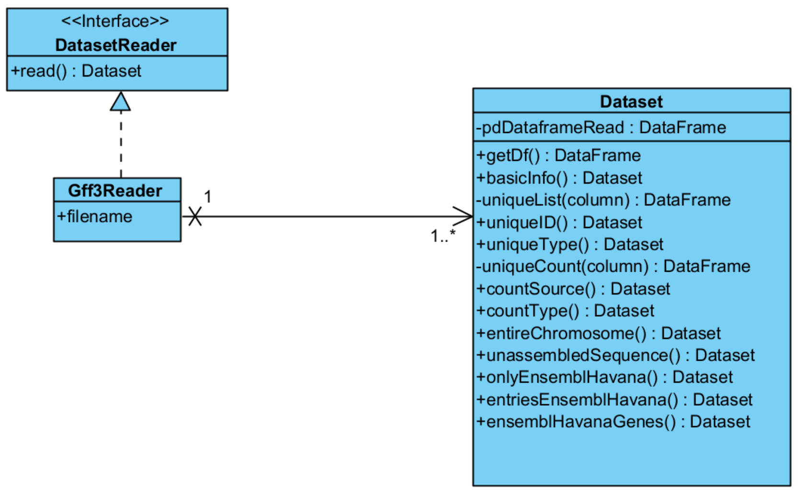

PROJECT DOCUMENTATION
Design
CRC cards

UML

Implementation
Reader
Following the project specifications, we implemented the abstract interface DatasetReader, which presents the abstract method read(), overridden by the read() method of the Gff3Reader, the DatasetReader subclass.
Gff3Reader is thus the realisation of the DatasetReader abstract interface; it is a concrete class that accepts a tabular file of format gff3 as an input and returns a Dataset object. We made sure that the class Gff3Reader was specific for the gff3 format by requesting that the fiel directory ended with '.gff3'. We analysed the file directory by splitting the whole using ‘.’ as delimiter, considering that the specification of the file type is contained in the last string, e.g.
- ‘Auto.tsv’ -> last string = file type = ‘tsv’ -> raises exception
- ‘Homo_sapiens.GRCh38.85.gff3’ -> last string = file type = ‘gff3’ -> works
Dataset and operations
The Dataset class is built around a Pandas Dataframe and can perform a list of active operations on that, which are listed as its public methods; all of those operations return a Dataset object.
The only two private methods found in the Dataset class are:
- __uniqueList(column) – given a column label, it returns the unique values in it in the form of a Pandas DataFrame;
implemented to exploit reusability of code, as it is utilised by both uniqueID() and uniqueType().
- __uniqueCount(column) – given a column label, it returns the count of each of its values. Returns a Pandas DataFrame.
As above, implemented to avoid repetition of code; it is utilised by countSource() and countType().
As for the other methods found, which return all a Dataset object:
- getDf() – retrieves the private attribute self.__df (type Pandas DataFrame);
- basicInfo() – returns a Dataset object which provides us the column names and the type of the data contained in each of them; i.e. it can be used to retrieve the basic information on the Dataset obtained from the gff3 file reading;
- uniqueID() – returns a Dataset object of unique values of column seqID (no duplicates);
- uniqueType() – returns a Dataset object which informs us on the list of unique type of operations available in the dataset;
- countSource() – returns a Dataset object with the count of Source column – for each source, how many entries do we have of it?
- countType() – returns a Dataset object wuth the count of Type column – for each type, how many entries do we have?
- entireChromosome() – filters the column source to identify only entire chromosomes rows, which are returned as a Dataset object – i.e. only rows with source GRCh38 are selected and returned as a new dataset object;
- unassembledSequence() – returns a Dataset object with the fraction and the percentage of the unassembled sequences over the dataset provided by entireChromosome(), retrieving first the Dataset obtained by ‘entireChromosome()’ method and then selecting only the entries of type ‘superconting’; eventually, it performs the fraction of the unassembled over the total entries to obtain the ratio, which is expressed also as percentage;
- onlyEnsemblHavana() – returns a Dataset object with only entries from sources ensembl, havana and ensembl_havana;
- entriesEnsemblHavana() – returns a Dataset object with the counts of the number of entries for each unique type found in the onlyEnsemblHavana() Dataset;
- ensemblHavanaGenes() – returns a Dataset object with the name of the genes present in the Dataset obtained by onlyEnsemblHavana().
Decorator
The decorator implemented in our program reads a .csv file containing the name of a function and if it is active or not (True or False).
- If the operation is not active, when the user tries to execute it in the web interface it gives an Internal Server error
- If the operation is active, the user sees the returning Dataset printed in a table.
A note on active operations and the decorator that manages them:
our choice of implementation was to use a csv file to compile the list of active operation, and a function decorator to manage them. This meant that our UML class diagram could not figure nor the registry of active operation, nor the decorator, albeit they both interact with the class Dataset, since it must check for an operation to be active before performing them. For coherence, and as we found it to be rather disorienting, we also did not add the collaboration to the CRC cards.
Web-based user interface
The software functions through the execution of the main module implemented with Flask. There we read the .gff3 file using the Gff3Reader. Using the link the user visualizes an hompegage that contains two links:
- one for the project documentation with CRC cards and UML;
- one for the operations to perform on the Dataset: opens a list the operations, each one with a link that opens in a new tab the table returned by the operation.
The web implementation is written in .html files that are then easily integrated with Flask using ‘render_template’.